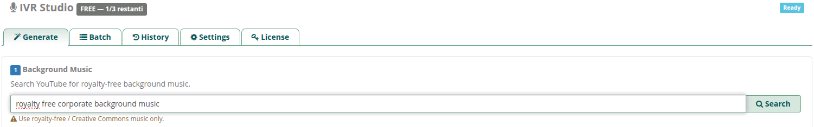
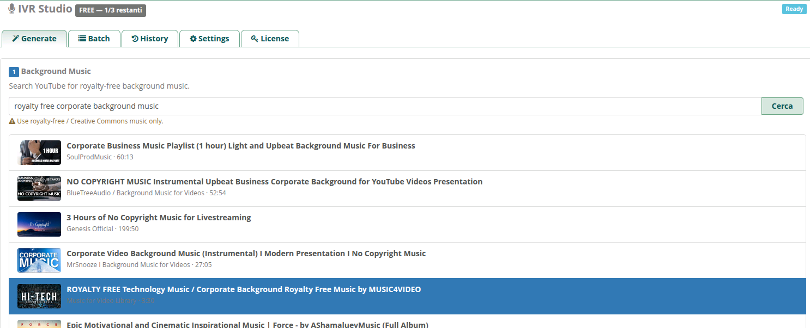
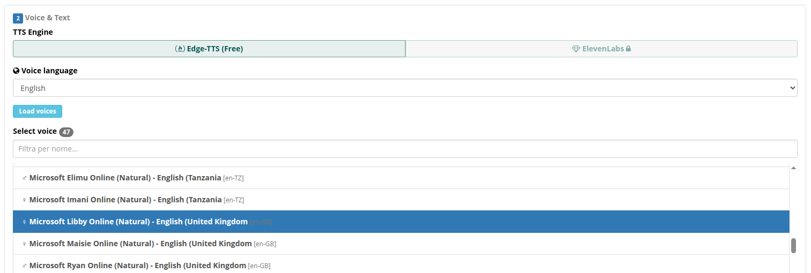
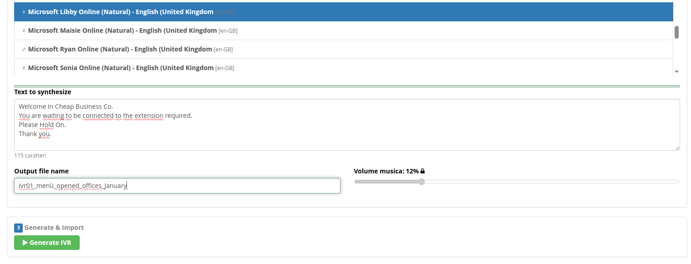
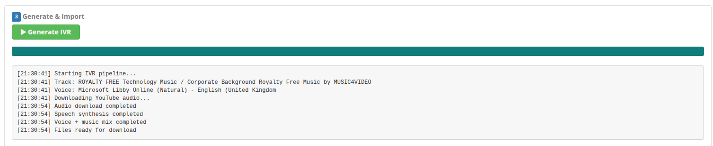
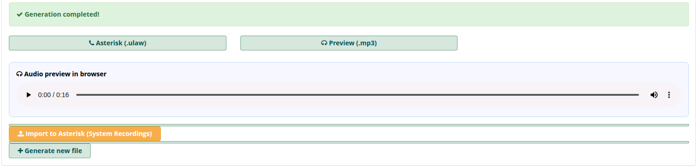
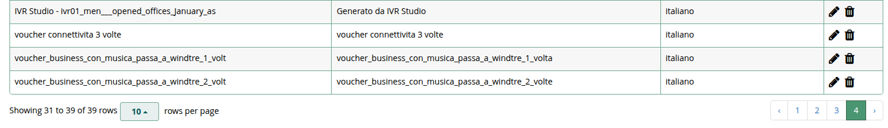

Generate professional IVR audio files for your PBX system in minutes. Combine YouTube background music with neural text-to-speech voices. One-click import to Asterisk.
Search and select royalty-free background music directly from YouTube. Automatic download and audio extraction.
High-quality voices in 22 languages powered by Microsoft Edge-TTS (free) or ElevenLabs (premium).
Automatic voice + music mixing with loudness normalization, configurable delay, fade-out, and volume control.
Export directly to Asterisk (.ulaw 8kHz) and FreeSWITCH (.wav 16kHz). Import to System Recordings with one click.
Italian, English, German, French, Spanish, Portuguese, Polish, Dutch, Swedish, Romanian, Hungarian, Czech, and more.
Generate up to 20 IVR messages at once with the same music and voice. Each with audio preview and one-click import.
Listen to your IVR audio directly in the browser with the built-in HTML5 player before importing.
Install from GUI, generate audio, import to Asterisk - all without leaving FreePBX. Compatible with v15, 16, 17.
Audio generation happens in the cloud over HTTPS. Your FreePBX only sends text and receives the finished audio file.
From text to professional IVR audio in 7 simple steps. No audio editing skills required.
Search YouTube for royalty-free background music. Type your query and browse results.

Click on any result to select it as your background music. The module shows title, channel, and duration.

Select your TTS engine (Edge-TTS free or ElevenLabs premium), choose one of 22 languages, and pick a neural voice.

Type your IVR message, name the output file, and adjust music volume.

Click "Generate IVR" and watch the real-time progress. The cloud engine downloads music, synthesizes voice, and mixes everything.

Listen to the result with the built-in audio player. Download in Asterisk (.ulaw) or FreeSWITCH (.wav) format.

Your IVR file appears in System Recordings. Use it in IVR menus, ring groups, queues, and more.

Compare with alternatives
| Feature | IVR Studio | Manual Recording | Online TTS |
|---|---|---|---|
| Background music mixing | ✔ | ✘ | ✔ (limited) |
| FreePBX integration | ✔ Native | ✘ | ✘ |
| One-click Asterisk import | ✔ | ✘ Manual | ✘ Manual |
| 22 voice languages | ✔ | ✘ | ✔ |
| Batch generation | ✔ Up to 20 | ✘ | ✘ |
| Audio preview | ✔ In-browser | ✔ | ✔ |
| No audio editing skills | ✔ | ✘ | ✔ |
| Starting price | Free | $80+/recording | $18-99/mo |
Start free. Upgrade when you need more.
Save 26% vs monthly
Install the free module and generate your first IVR prompt in minutes.
Free plan available - 3 generations per month, no credit card required.